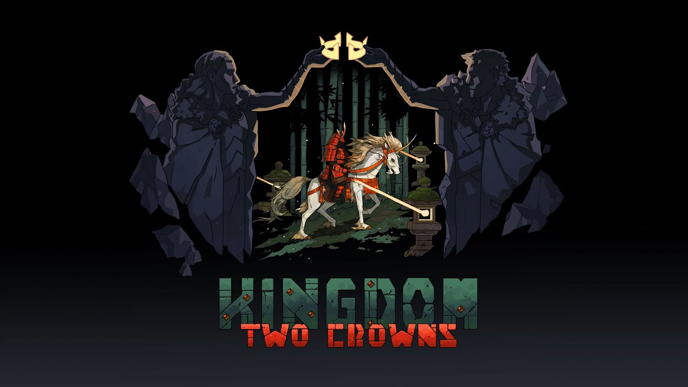

-
Fortunas a serem encontradas na Segunda Temporada Sea of Thieves
-
F1 2021 será lançado em 16 de julho para Xbox Series X|S e Xbox One
-
 Dias para Jogar de Graça – Kingdom Two Crowns
-
Recap do Age of Empires: Fan Preview – Tudo o que foi revelado no evento global da comunidade